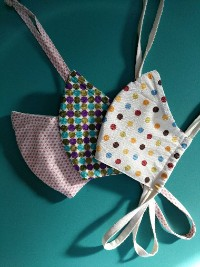
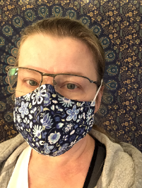
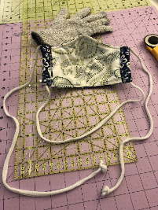

The Shaped Mask
  (Updated April 15 to include references to the original CraftPassion design.)
SUNY Upstate has released their instruction sheet
for a close fitting, shaped mask which they prefer. There were some points in these original instructions that needed clarifying and the
patterns were a little off, so I have an alternate version of these
instructions (uses the same pattern pieces), along with a redraft of the pattern. For reference, the original instructions are here.
The "Upstate" shaped mask is based on the design created by CraftPassion.com. Joanne at CraftPassion has updated her design and
assembly methods several times since Upstate's initial release.
If you have trouble with the instructions here at the Syracuse Mask Project, check out her website. You might like her instructions better. Keep in mind that our local hospitals are asking for
a three layer mask with a layer of cotton flannel sandwiched between two layers of tightly woven quilting cotton fabric. They are not asking for masks which include a filter pocket.
SUNY Upstate will be distributing any extra of these sewn masks to other
hospitals in Syracuse.
Instructions with pattern: Alternate Assembly with Pattern (.pdf)
Instructions only: Shaped Mask Instructions (.pdf)
Pattern only: Shaped Mask Pattern (.pdf)
Notes
Pattern: There has been a lot of confusion over the patterns included with the original Upstate instructions. The Medium-sized LINING FABRIC pattern
piece was drafted incorrectly. I have drafted a new set of pattern pieces to eliminate confusion. If you need more size options,
check out the patterns at CraftPassion.com
I have found that the size Large shaped mask fits most adults well. In order to produce masks faster and eliminate confusion in my sewing room, I will be making
only large masks to donate to hospitals.
Layers: There was a question about whether the original Upstate instructions for the shaped mask included two layers of fabric or three. I confirmed this with them, and the request is for three layers -- cotton outer, flannel middle, and cotton lining.
Ties: You can use a number of different ties on the shaped masks. My alternate instructions feature
one long 45" tie. The tie goes down through one side, around the back
of the neck, and up through the other side, then tied at the crown of the head. Just make sure you you have a wide enough channel at the edges of your
mask to thread a tie through. This makes a secure, comfortable mask that is easy to wear all day. It
also requires less fabric to make one long tie rather than four shorter corner ties.
Fabric ties can also be made from a lengths of 1/2" bias binding. Fold the binding lengthwise and stitch along the open edge to make a tie that is 1/4" wide.
It's narrower
than the self-fabric ties, but still works fine. Knot the ends to keep them from raveling. Other sewists have had success using twill tape or shoe lacing for ties. Both
of these would also make good choices.
Another good option for ties is T-shirt fabric. Cut 1" strips of fabric across the width of an old T-shirt just below the armpits. Pull on the strips
to stretch them out before sewing them to your mask or threading them through the side channels. T-shirt ties are stretchy so you can really snug them tight around the head without it hurting.
Instead of using one long 45" tie, you can use elastic ear loops. Some people, though, are reporting that the elastic ear loops are too
loose on some people or cause ear
fatigue if worn too long. You may want to
make four fabric ties in liu of elastic. These ties are 18" long and are sewn into the corners of rectangular masks
Nose pieces: There are a number of things you can use for the nose pieces on the shaped masks. Some people are using pipe
cleaners or heavy twist ties (unused). Floral wire has also been suggested as a viable alternative.
You can use metal strips cut from
aluminum roof flashing. They are a sturdier alternative to pipe cleaners, heavy twists ties, or
floral wire. Cut 1/4" strips and trim them to 5 inch lengths. You can use either a pair of
metal snips or heavy scissors. Nip off the corners so they are more "user friendly" and slide into the mask easier.
Making nose pieces for others: If you are willing to cut extra strips for others to use, try to cut them as accurately as possible since some mask designs require you to slide the strip into a
narrow casing. If they are too wide, they won’t fit! If the edges seem sharp,
they can be sanded lightly, but this is probably unnecessary. Please wash your hands thoroughly and disinfect sheets of flashing before cutting strips.
Package extra strips in lots of 16 or 20 in paper envelopes or sleeves. Leave them in the donation bin at Calico Gals quilt shop, 3906 New Court Avenue, Syracuse.
A second drop-off spot for extra precut nose pieces is 3220 Far Reach Drive in Baldwinsville
.
To wash finished masks before donating them, place them in a net lingerie bag or pillow case to keep the ties from tangling.